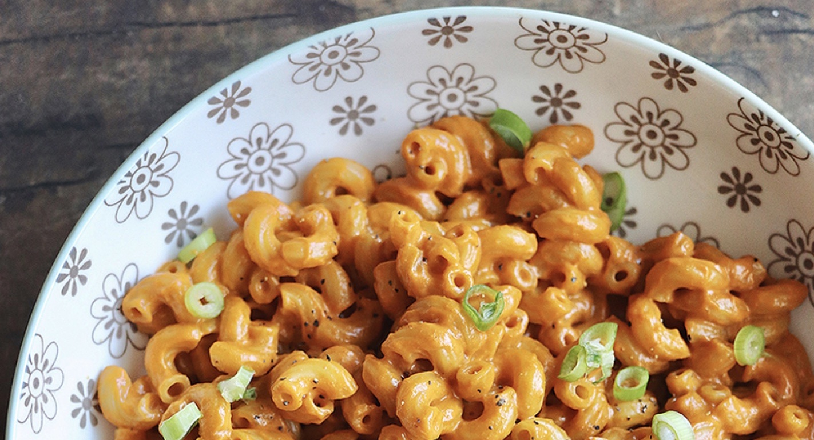

Sun Dried Tomato Mac and Cheese

You'll love this sun dried tomato mac and cheese!
Ingredients
- 1 15 oz can coconut milk
- 3/4 cup sundried tomatoes in oil (it was about 1/4 cup of oil, if that helps)
- 2 tablespoons miso
- 1/2 cup nutritional yeast flakes
- 2 teaspoons onion powder
- 1 lb macaroni
- Black pepper and something green to garnish, if ya want.
Steps
- Put everything in a blender and, uh, blend. Until totally smooth.
- Cook noodles in salted water, drain them and return the pot.
- While still hot, add the sauce and mix with a rubber spatula. Taste for salt, I didn’t need any because miso and sundrieds were salty.
- Serve!